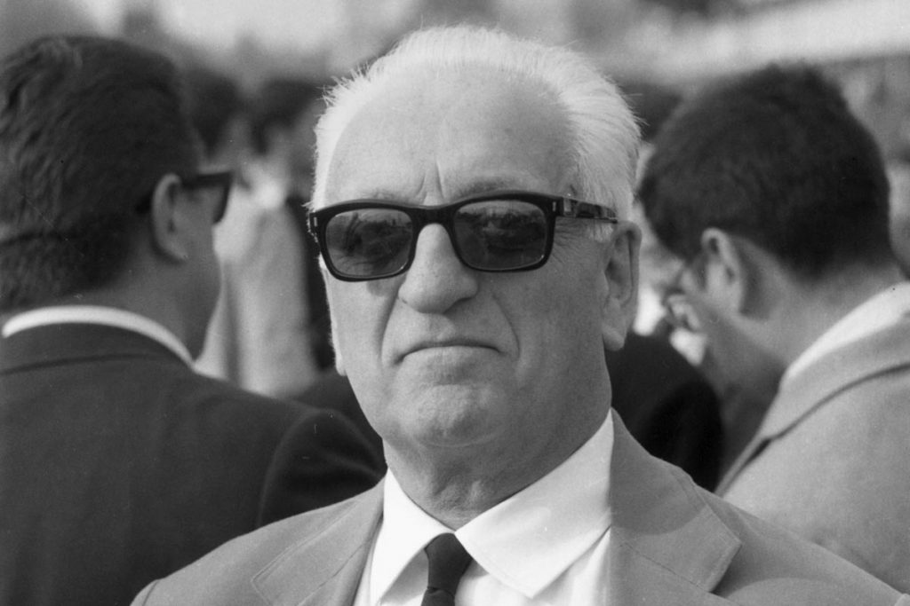
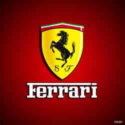

|  |
Founded by Enzo FerrariEnzo Anselmo Giuseppe Maria Ferrari, Cavaliere di Gran Croce OMRI was an Italian motor racing driver and entrepreneur, the founder of the Scuderia Ferrari Grand Prix motor racing team, and subsequently of the Ferrari automobile marque. He was widely known as "il Commendatore" or "il Drake". In his final years he was often referred to as "l'Ingegnere" (the Engineer) or "il Grande Vecchio (the Great Old Man)". The Enzo Ferrari (Type F140) is a mid-engine sports car manufactured by Italian automobile manufacturer Ferrari and named after the company's founder, Enzo Ferrari. It was developed in 2002 using Formula One technology, such as a carbon-fibre body, F1-style automated-shift manual transmission, and carbon fibre-reinforced silicon carbide (C/SiC) ceramiccomposite disc brakes, as well |
|  |
Ferrari car logoFerrari logo is an Italian luxury sports car manufacturer based in Ferrari logo. Turin, Italy - December 19, 2020: Closeup of the Ferrari logo on a metallic blue car body Ferrari logo on the side part of red car close-up. Spilamberto, Italy- October 02, 2016: Ferrari logo on the side part of red car close-upThe famous logo of the Ferrari racing team is a black prancing horse and a yellow army of coats, usually with the inscription S F that means Scuderia Ferrari. The logo is crowned with green, white and red stripes, which symbolize Italian national colors. |